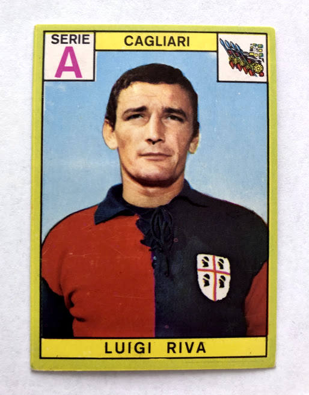

Luigi Riva

Gigi Riva è stato il bomber storico del Cagliari, vincendo lo Scudetto nel 1970 e diventando capocannoniere della Nazionale Italiana.
Gigi Riva è stato il bomber storico del Cagliari, vincendo lo Scudetto nel 1970 e diventando capocannoniere della Nazionale Italiana.